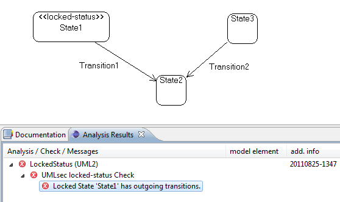

This check analyzes UML state diagrams using the «locked-status» stereotype (cf. Ochoa et al. - Model-based Security Verification and Testing for Smartcards, 2011) by checking every state marked by «locked-status». These states may not have any outgoing transitions.
Annotate a model containing a state diagram with «locked-status» as necessary. After finishing the model, create a new CARiSMA analysis on the model. Add the Smartcard Locked Status Check to the used checks and click "Run" to start the analysis.
The Analysis Results View displays whether the check was successful. If any locked state has outgoing transitions, appropriate informations are displayed in the Analysis Results View.
The example model contains a locked state with outgoing transitions.

After correcting the model, the analysis reports the success of the check.